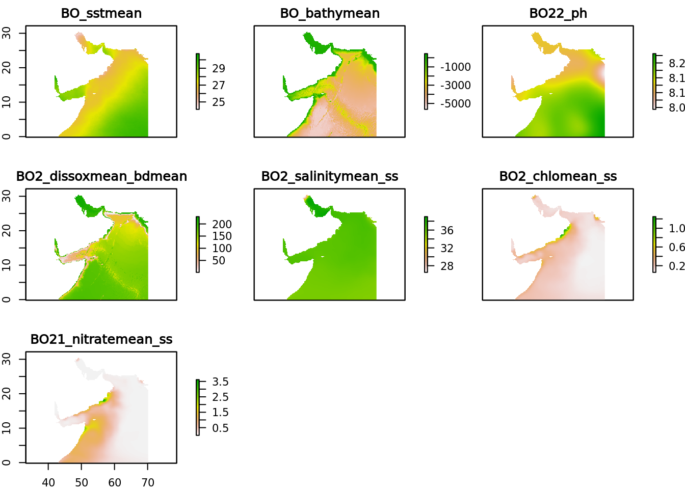
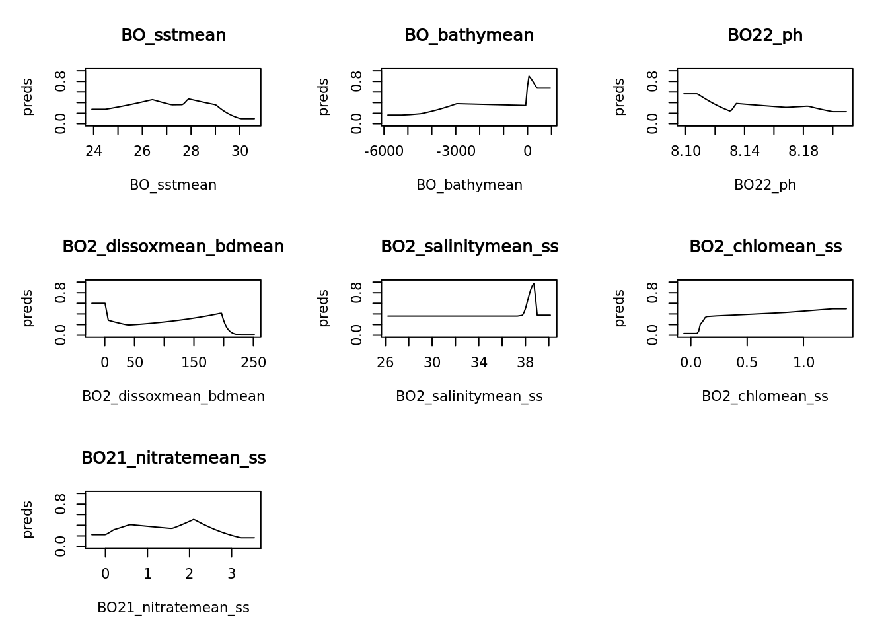
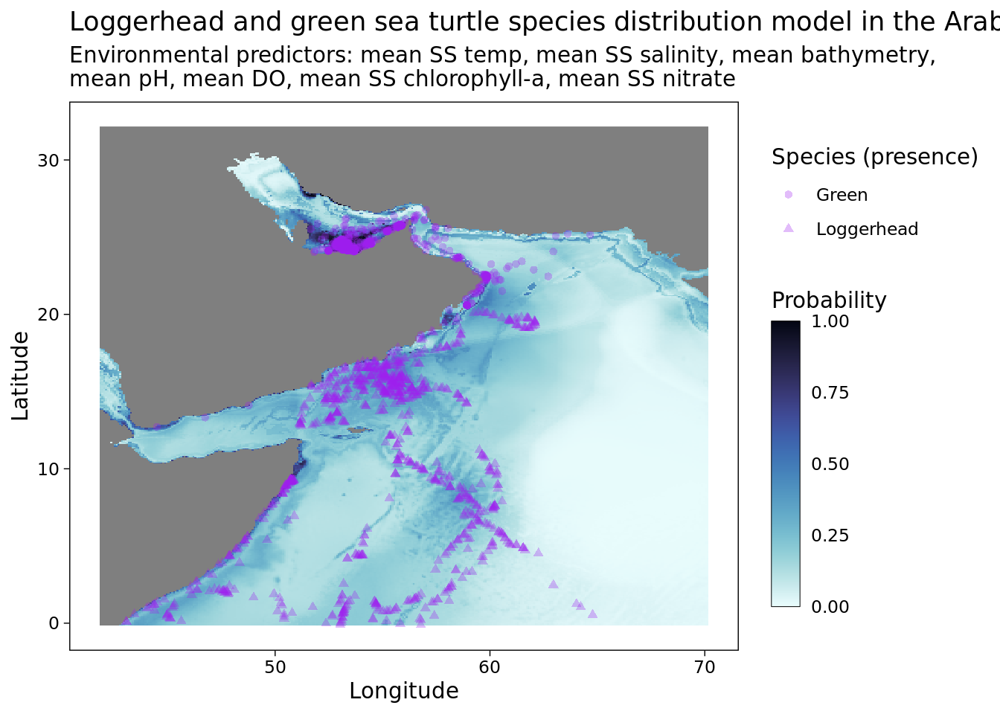
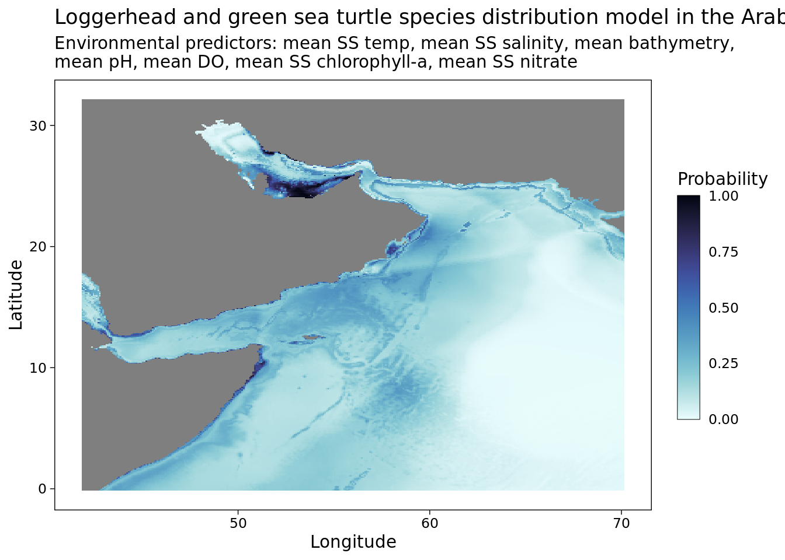
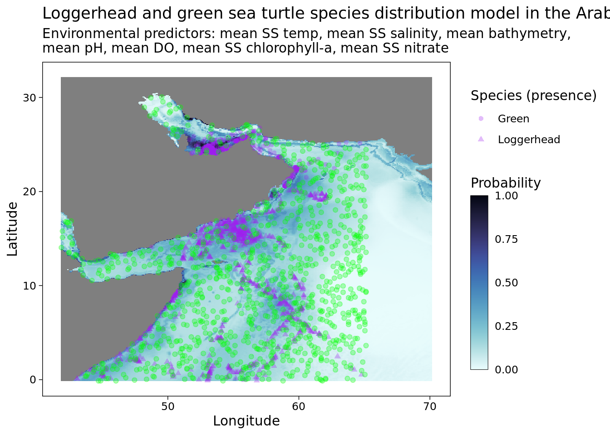

devtools::install_github("BigelowLab/maxnet")Maxent SDM attempt
Pre-SDM
Set-up
You will need to install a new version of maxnet for this tutorial.
suppressPackageStartupMessages({
library(maxnet)
library(dplyr)
library(maxnet)
library(sf)
library(stars)
library(geodata)
library(dismo)
library(lubridate)
library(sdmpredictors)
library(zoon)
library(ggplot2)
library(cmocean)
library(janitor)
library(DT)
})Load data in
# presence data
io.turtles <- read.csv("/home/jovyan/R/ohw23_proj_marinesdms/data/raw-bio/io-sea-turtles.csv")
# absence data
pts.abs <- read.csv("/home/jovyan/R/ohw23_proj_marinesdms/data/raw-bio/pts_absence.csv") # X is lon and Y is latFormat occurrence data
spp <- c("Chelonia mydas", "Caretta caretta", "Eretmochelys imbricata", "Lepidochelys olivacea", "Natator depressus", "Dermochelys coriacea") # turtle species we're interested in
occ <- io.turtles %>%
subset(scientificName == spp) # subsetting all the occurence data to just those turtles Warning in scientificName == spp: longer object length is not a multiple of
shorter object lengthtable(occ$scientificName) # seeing how often each species occurs
Caretta caretta Chelonia mydas Eretmochelys imbricata
891 1307 36
Lepidochelys olivacea
9 occ <- occ %>% # but we also need to subset the occurences to include just those in the water (not the ones on land)
subset(bathymetry > 0 &
shoredistance > 0 &
coordinateUncertaintyInMeters < 200)
table(occ$scientificName) # seeing how often each species occurs now
Caretta caretta Chelonia mydas
874 1190 # Caretta caretta is Loggerhead and Chelonia mydas is Green sea turtles
occ.sub <- occ[,c(2,4,5,6,9,11,13,14)] # choosing the cols I want
occ.sub$eventDate <- lubridate::ymd_hms(occ.sub$eventDate) # changing to datetime format
colnames(occ.sub) <- c("sci.name", "obsv.datetime", "lat", "lon", "life.stage", "bathy", "SST", "SSS") # renaming# format background/absence points
colnames(pts.abs) <- c("lon","lat")
pts.abs <- na.omit(pts.abs)
abs.points <- sf::st_as_sf(pts.abs, coords = c("lon", "lat"), crs = 4326)# format prescence/occurrence points
head(occ.sub) sci.name obsv.datetime lat lon life.stage bathy SST
2 Caretta caretta 2011-04-12 19:12:41 6.40193 59.87883 Juvenile 3051 28.67
7 Chelonia mydas 2018-03-31 06:44:00 24.50800 53.20100 <NA> 14 27.96
13 Chelonia mydas 2019-05-28 12:15:00 24.57700 53.08300 <NA> 2 27.93
14 Caretta caretta 2011-04-11 04:03:19 16.05778 54.28696 Juvenile 2736 26.92
20 Caretta caretta 2011-03-24 14:33:23 16.52469 53.83602 Juvenile 2030 26.68
25 Chelonia mydas 2018-04-05 23:33:00 24.54900 53.09200 <NA> 2 27.94
SSS
2 35.74
7 38.71
13 38.65
14 36.10
20 36.05
25 38.67occ.points <- sf::st_as_sf(occ.sub, coords = c("lon", "lat"), crs = 4326)
head(occ.points)Simple feature collection with 6 features and 6 fields
Geometry type: POINT
Dimension: XY
Bounding box: xmin: 53.083 ymin: 6.40193 xmax: 59.87883 ymax: 24.577
Geodetic CRS: WGS 84
sci.name obsv.datetime life.stage bathy SST SSS
2 Caretta caretta 2011-04-12 19:12:41 Juvenile 3051 28.67 35.74
7 Chelonia mydas 2018-03-31 06:44:00 <NA> 14 27.96 38.71
13 Chelonia mydas 2019-05-28 12:15:00 <NA> 2 27.93 38.65
14 Caretta caretta 2011-04-11 04:03:19 Juvenile 2736 26.92 36.10
20 Caretta caretta 2011-03-24 14:33:23 Juvenile 2030 26.68 36.05
25 Chelonia mydas 2018-04-05 23:33:00 <NA> 2 27.94 38.67
geometry
2 POINT (59.87883 6.40193)
7 POINT (53.201 24.508)
13 POINT (53.083 24.577)
14 POINT (54.28696 16.05778)
20 POINT (53.83602 16.52469)
25 POINT (53.092 24.549)occ.points <- occ.points %>%
mutate(common.name = case_when(sci.name == "Caretta caretta" ~ "Loggerhead",
sci.name == "Chelonia mydas" ~ "Green"))SDM predictors
Loading in
datasets <- sdmpredictors::list_datasets(terrestrial = FALSE, marine = TRUE)
layers <- list_layers(datasets)
#View(layers)Choosing and formatting
layercodes = c("BO_sstmean", "BO_bathymean", "BO22_ph", "BO2_dissoxmean_bdmean", "BO2_salinitymean_ss", "BO2_chlomean_ss", "BO21_nitratemean_ss") # the env variables I chose from SDMpredictors
env <- load_layers(layercodes, rasterstack = T) # take out the equalarea arg or you will be sad AND add rasterstack = T
env.stars <- stars::st_as_stars(env) # convert to stars object
env.stars <- split(env.stars)
lats <- c(-0.125, 32.125); lons <- c(41.875, 70.125) # IO lat/lon range
# raster extent is defined by west lon, east lon, south lat, north lat
ext <- raster::extent(lons[1], lons[2], lats[1], lats[2])
extent_polygon <- as(ext, "SpatialPolygons") %>%
st_as_sf()
# we need to assign a coordinate system; 4326 is the default for maps in sf
sf::st_crs(extent_polygon) <- 4326 # applying a coordinate system
plot(extent_polygon) # look a rectangle
bb <- sf::st_bbox(extent_polygon) # make a bounding box
plot(env.stars["BO_bathymean"] %>% sf::st_crop(bb)) # looking at bathymetry
env.obs <- stars::st_extract(env.stars,
sf::st_coordinates(occ.points)) %>%
dplyr::as_tibble()
io.rast <- raster::crop(env, extent(extent_polygon))
plot(io.rast) # look NOT a rectangle- your env variables cropped to the Indian Ocean!
Pull in background data
env.back <- stars::st_extract(env.stars, sf::st_coordinates(abs.points)) %>%
dplyr::as_tibble() %>%
na.omit()
head(env.back)# A tibble: 6 × 7
BO_sstmean BO_bathymean BO22_ph BO2_dissoxmean_bdmean BO2_sa…¹ BO2_c…² BO21_…³
<dbl> <dbl> <dbl> <dbl> <dbl> <dbl> <dbl>
1 28.4 -2445 8.16 111. 36.2 0.213 0.192
2 26.9 -3142 8.12 119. 36.5 0.110 0.0300
3 28.3 -4549 8.19 159. 36.0 0.0715 0.0129
4 27.1 -4970 8.17 180. 35.5 0.199 1.05
5 26.8 -3869 8.16 156. 36.0 0.227 1.05
6 28.0 -5095 8.17 183. 35.4 0.179 0.715
# … with abbreviated variable names ¹BO2_salinitymean_ss, ²BO2_chlomean_ss,
# ³BO21_nitratemean_ssSDM Model
Running model
env.obs <- na.omit(env.obs); env.back <- na.omit(env.back) # remove NA values
pres <- c(rep(1, nrow(env.obs)), rep(0, nrow(env.back))) # create values of 1 for presence data and 0 for absence data
sdm.model <- maxnet::maxnet(pres, rbind(env.obs, env.back))Model metrics
responses <- plot(sdm.model, type = "cloglog")
Predicting
clamp <- TRUE # see ?predict.maxnet for details
type <- "cloglog"
predicted <- predict(sdm.model, env.stars %>% sf::st_crop(bb), clamp = clamp, type = type)
predictedstars object with 2 dimensions and 1 attribute
attribute(s):
Min. 1st Qu. Median Mean 3rd Qu. Max. NA's
pred 0.004169259 0.03760357 0.1309148 0.1481357 0.2085298 0.9996747 58655
dimension(s):
from to offset delta refsys point values x/y
x 2663 3002 -180 0.0833333 +proj=longlat +datum=WGS8... NA NULL [x]
y 695 1082 90 -0.0833333 +proj=longlat +datum=WGS8... NA NULL [y]Visualization
# ggplot - with occurrence data points
ggplot() +
geom_stars(data = predicted) +
scale_fill_cmocean(name = "ice", direction = -1, guide = guide_colorbar(barwidth = 1, barheight = 10, ticks = FALSE, nbin = 1000, frame.colour = "black"), limits = c(0, 1)) +
theme_linedraw() +
theme(panel.background = element_blank(),
panel.grid.major = element_blank(),
panel.grid.minor = element_blank()) +
labs(title = "Loggerhead and green sea turtle SDM in the Arabian Sea",
x = "Longitude",
y = "Latitude",
fill = "Probability",
shape = "Species (presence)",
subtitle = "Environmental predictors: mean SS temp, mean SS salinity, mean bathymetry, \nmean pH, mean DO, mean SS chlorophyll-a, mean SS nitrate") +
geom_point(occ.points, mapping = aes(shape = common.name, geometry = geometry), stat = "sf_coordinates", alpha = 0.3, color = "purple") +
#scale_x_continuous(breaks = seq(40, 70, 10), limits = c(42, 70))+
scale_y_continuous(breaks = seq(0, 30, 10))
ggsave("SDM_loggerhead_green_w points.pdf", height = 6, width = 8.5)# ggplot - without occurrence data points
ggplot() +
geom_stars(data = predicted) +
scale_fill_cmocean(name = "ice", direction = -1, guide = guide_colorbar(barwidth = 1, barheight = 10, ticks = FALSE, nbin = 1000, frame.colour = "black"), limits = c(0, 1)) +
theme_linedraw() +
theme(panel.background = element_blank(),
panel.grid.major = element_blank(),
panel.grid.minor = element_blank()) +
labs(title = "Loggerhead and green sea turtle SDM in the Arabian Sea",
x = "Longitude",
y = "Latitude",
fill = "Probability",
shape = "Species (presence)",
subtitle = "Environmental predictors: mean SS temp, mean SS salinity, mean bathymetry,\nmean pH, mean DO, mean SS chlorophyll-a, mean SS nitrate") +
#geom_point(occ.points, mapping = aes(shape = common.name, geometry = geometry), stat = "sf_coordinates", alpha = 0.3, color = "purple") +
#scale_x_continuous(breaks = seq(40, 70, 10), limits = c(42, 70))+
scale_y_continuous(breaks = seq(0, 30, 10))
ggsave("SDM_loggerhead_green.pdf", height = 6, width = 8.5)# ggplot - with occurrence and absence data points
ggplot() +
geom_stars(data = predicted) +
scale_fill_cmocean(name = "ice", direction = -1, guide = guide_colorbar(barwidth = 1, barheight = 10, ticks = FALSE, nbin = 1000, frame.colour = "black"), limits = c(0, 1)) +
theme_linedraw() +
theme(panel.background = element_blank(),
panel.grid.major = element_blank(),
panel.grid.minor = element_blank()) +
labs(title = "Loggerhead and green sea turtle SDM in the Arabian Sea",
x = "Longitude",
y = "Latitude",
fill = "Probability",
shape = "Species (presence)",
subtitle = "Environmental predictors: mean SS temp, mean SS salinity, mean bathymetry, \nmean pH, mean DO, mean SS chlorophyll-a, mean SS nitrate") +
geom_point(occ.points, mapping = aes(shape = common.name, geometry = geometry), stat = "sf_coordinates", alpha = 0.3, color = "purple") +
#scale_x_continuous(breaks = seq(40, 70, 10), limits = c(42, 70))+
scale_y_continuous(breaks = seq(0, 30, 10)) +
geom_point(abs.points, mapping = aes(geometry = geometry), stat = "sf_coordinates", alpha = 0.3, color = "green") # adding in absence data